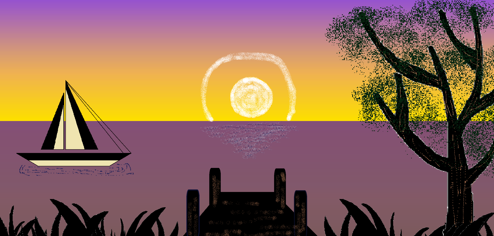

Практическое задание №2. Создание простых графических изображений (Paint)
Тема: Композиция, силуэтная графика и текстурные инструменты в растровом редакторе.
Учебные элементы:
- Инструменты формы («Линия», «Кривая», «Овал»): построение четких геометрических контуров (парусник, солнце) и направляющих линий.
- Инструмент «Кисть / Распылитель»: создание рассеянного света вокруг солнца, бликов на воде и мелколиственной кроны дерева.
- Многоцветная заливка и силуэты: разделение холста на планы, заливка фонового градиента (неба) вручную, прорисовка темных объектов переднего плана.
Порядок выполнения работы:
Вам необходимо создать растровый пейзаж «Закат на озере» по эталонному образцу, используя послойный метод конструирования (от заднего плана к переднему):

Шаг 1: Формирование фона и линии горизонта
- Задайте размер холста (рекомендуется 1000х500 пикселей).
- Разделите холст строго пополам горизонтальной линией — это будет граница воды и неба.
-
Сформируйте градиент неба: проведите 2-3 горизонтальные линии
в верхней части холста и залейте полосы тремя оттенками
(фиолетовый, сиреневый, желтый).
- Нижнюю часть холста (воду) залейте однотонным приглушенно-пурпурным цветом.
Шаг 2: Отрисовка солнца и парусника (Средний план)
- Солнце: С помощью инструмента «Овал» с зажатой клавишей Shift нарисуйте идеальный круг на линии горизонта. Залейте его ярко-желтым цветом.
- Текстурные эффекты: Выберите инструмент «Кисть» (тип: Распылитель / Аэрограф). Сделайте аккуратный полукруглый ореол белым цветом над солнцем и нанесите горизонтальные штрихи на воде под солнцем, имитируя световую дорожку.
-
Парусник: Слева на воде постройте лодку.
Используйте инструмент «Линия» для создания корпуса и
треугольных парусов. Залейте паруса бежевым цветом, а корпус —
черным и бежевым.
- *Подсказка:* Чтобы линии паруса были идеально ровными, удерживайте Shift. Тонким распылителем или карандашом наметьте небольшие волны под лодкой.
Шаг 3: Прорисовка силуэтов переднего плана (Темный силуэт)
- Переключите основной цвет на черный (или темно-коричневый). Все объекты переднего плана должны быть силуэтными (без внутренних деталей).
- Дерево: Справа нарисуйте ствол и ветви дерева с помощью кисти или инструмента «Кривая». Сделайте их более толстыми у основания.
- Листва: Возьмите инструмент «Распылитель» (выберите средний или крупный размер кисти) и короткими кликами сформируйте пушистую крону дерева вокруг веток.
- Мостик и камыши: В центре нижней части холста нарисуйте прямоугольные опоры и настил мостика. По бокам от него аккуратными свободными мазками кисти («Каллиграфическая кисть» или обычная кисть со скошенным краем) нарисуйте силуэты травы и камышей.